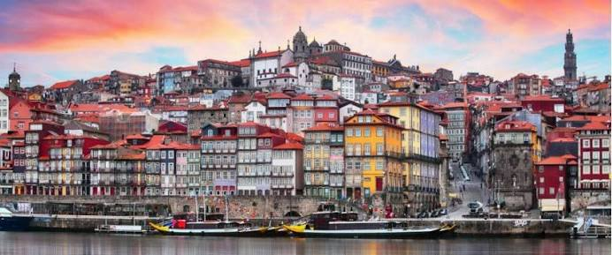

Ribeira do Porto
Zona histórica
A Ribeira é uma das zonas mais conhecidas da cidade, situada junto ao rio Douro.
O que torna a Ribeira um local tão único?
A Ribeira é uma das zonas mais conhecidas do Porto. Situa-se junto ao rio Douro e destaca-se pelas suas ruas estreitas, edifícios coloridos e restaurantes tradicionais.
Torre dos Clérigos
MonumentoA Torre dos Clérigos é um dos monumentos mais emblemáticos do Porto.
É possível subir à Torre dos Clérigos?
Sim. Os visitantes podem subir à torre através de uma escadaria e apreciar uma vista panorâmica sobre a cidade do Porto.